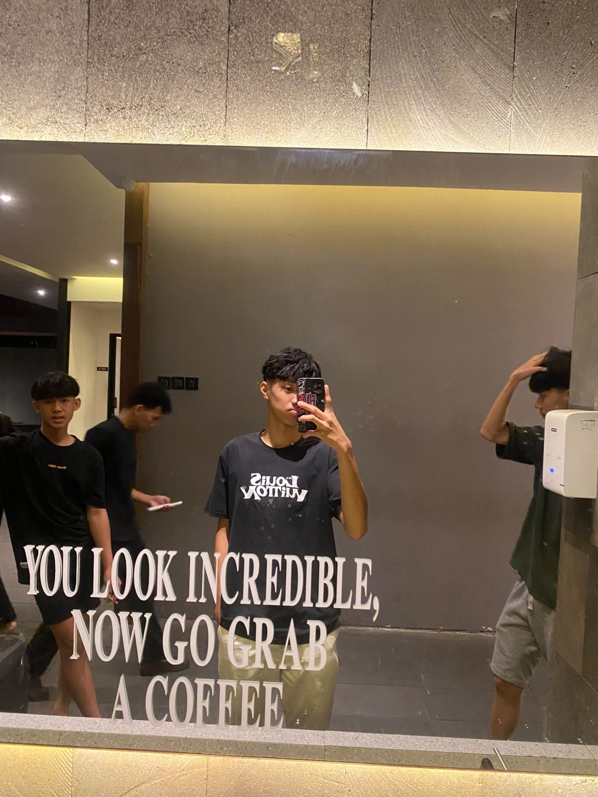

Leonardy Lexhius
X TKJ-1 | Absen 20
Halo! Nama saya Leonardy Lexhius. Saya adalah siswa kelas X TKJ-1. Saya memiliki beberapa hobi, yaitu bermain sepak bola, bermain billiard, dan memodifikasi motor.
Cita-cita saya adalah menjadi seorang pilot. Saya ingin terus belajar, mengembangkan kemampuan, dan berusaha meraih cita-cita saya di masa depan.